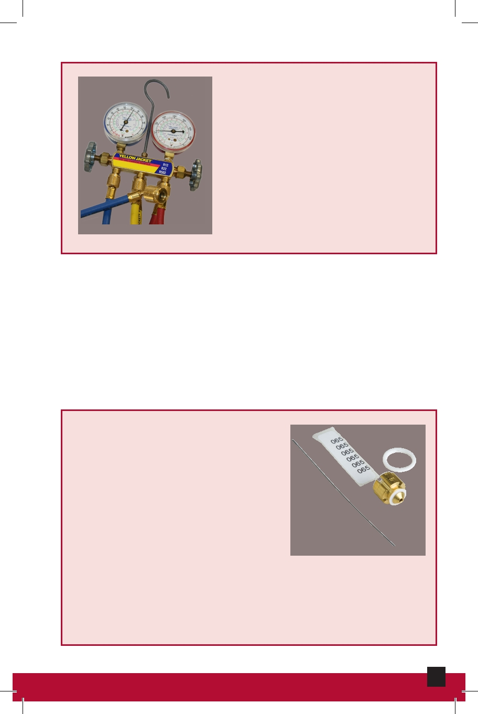

Manifold Gauge Set
A tool used to obtain pressure and
temperature readings at different
points in the air conditioning
system. It has two gauges one
reads the low-pressure side of the
system; the other measures the
high-pressure side.
Manifold Gauge Set
Material Safety Data Sheets (MSDS)
Information sheets required by the Occupational Safety
and Health Administration (OSHA), containing chemical
properties, health hazards, and required Personal Protective
Equipment (PPE) to be used.
Metering Device
This device regulates the flow of
highly pressurized liquid refrigerant
that passes into the evaporator.
When the refrigerant passes
through the device, it changes
from a high-pressure liquid to a
reduced-pressure liquid. Today,
the most common metering
Metering Device
device used in apartment cooling
systems is a capillary tube; some newer systems may use
a thermostatic expansion valve (TXV).
36
HVAC Maintenance and Repair